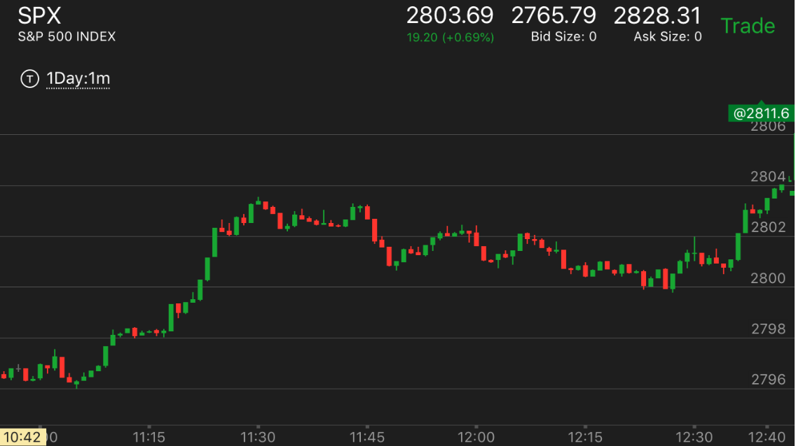
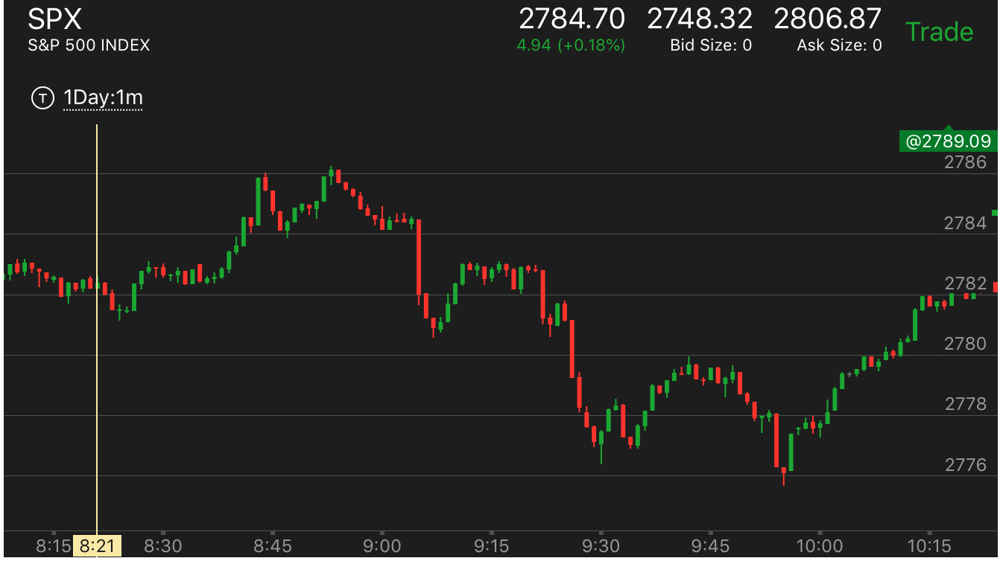
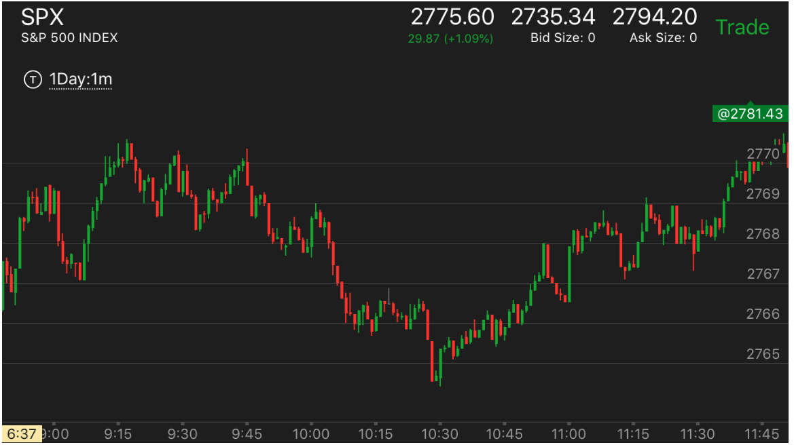

转折点形状理论
一旦确认是顶部或底部，不要怕错过了2，3个点，要去追赶，它会动很多个点的。
出现较大幅度上涨后，走平或者震荡，再次冲高
下跌的时候转折点形状
底部出现小幅冲高后，走平的走势
下跌的转向
出现了长时间回调跨越走势后，再次短时间跨越
长距离下跌后，走平，再次下跌
较大幅度下跌后，在底部走平或者震荡，然后再次走低
走势转折点形状的分析
走势转折点形状的分析
TOP
1. 一个走势的转折点，不会一下就反转的。一定是有至少4分钟以上，所以不用着急的去做这个走势，
而且一定是要是第二段走势，就是说，如果一个走势发生了第二段，在转折点有加速或者激烈的行为，
然后有平坦的样子，才是转折点，如果没有，那么就是要持续发展。不要反向操作。如果已经做了。
那么就一直拿住。或者看到它要回调，可以出来，但是不要反向操作。不挣回调的钱。
2. 双底和双顶的特点：两个顶部和底部一定有一个是平坦的，另外一个则是尖端的。
比如双底走势中，如果第一个平坦，那么它稍微反弹后，可能迅速下跌到原来的低点，甚至短时间跌破这个点，
然后立刻反弹。如果第一个立刻反弹，那么第二个会停留一段时间。然后反弹。双顶走势也是如此。

图示：
1. 7：40冲高后，在高点稍微低不到一个点的地方停留了4分钟，然后
稍微走低一些，继续在高点停留了5分钟，然后才大跌。所以有充足的时间来考虑做空。
2. 9：00和10：00的两个底部，第一个平坦，第二个立刻反弹
出现较大幅度上涨后，走平或者震荡，再次冲高
TOP
这个和下跌是对称的，可以把图镜像过来看。就是有了真空不再填补，而是继续上涨，这样就是顶部了。

图示：7:45开始上涨后，它不断的回调上涨。到了8：25，它不再回调，而是直接上涨。这样就是顶部了。
顶部平坦。

图示：8：58冲高，没有回调，继续冲高，这样就成了顶部的样子。

图示：7：50似乎是个顶点，但是它在高点停留时间很短，就走低了。
而且它前面的走势也不是很强烈，8：05它没有很多回调，继续走高。这样就是顶部了。

图示：7：25分，它在顶部走平了几分钟。它又是第二阶段了。
所以这个就是顶部。虽然它没有激烈的动作。但是它前面是走平后冲高，然后又在高点走平几分钟。
下跌的时候转折点形状
TOP

图示：8：00是个底部，它是平坦的，反弹后，力量不大，8：50又回来，
跌破低点后，立刻反弹。这个关键在于它反弹幅度不大。所以它下来后，仍然是双底走势。如果反弹很大。
那么这个再次下跌，可能跌破原来低点，继续走低了。象7：40的反弹，幅度很大。那么它再次下来，就跌破了低点。
底部出现小幅冲高后，走平的走势
TOP

图示： 前面出现了两次跨越的见顶走势后，10：10上涨一点，然后走平。可以看到它上涨幅度非常的小。
所以这个就是底部了。可以做多。不用等双底或者再底部走平。这个就是底部的形状。它后面不断缓慢上涨，再也没有回到底部。

图示：11:05开始的上涨，是冲高两个点。这样也可以算。如果大盘本身震荡就很大，
那么两个点也是很小的幅度。可以算作一个走势的开始。不一定是一个点。
出现了长时间回调跨越走势后，再次短时间跨越
TOP
出现这样的就到达底部了。会转向。

图示：6：40反弹后，在顶部走平了10分钟，然后大跌跨越前面低点。
7：00再次反弹，这次只有3分钟，就再次下跌跨越。一旦停止下跌，就是底部了。

图示：9：10分，出现了大幅下跌，它其实是一个跨越下跌，不能把它看作是加速走势而结束了。
而且看它反弹前，并没有加速，而是很缓慢的。所以这个不是底部。它反弹后，走平很久。然后再次下跌。再次下跌后，再底部没有走平，
而是震荡后，继续下跌。这个就已经出现了两次跨越。然后大涨。
较大幅度下跌后，在底部走平或者震荡，然后再次走低
TOP
关键在于在底部反弹幅度不大，不会填补真空，要注意真空的在不同规模上的定义。

图示：从8：20开始不断的缓慢下跌。虽然下跌缓慢，但是总体看，制造出来一个很大的真空。
9：00开始出现了一个5浪走势。这个5浪反弹不大，没有填补真空。然后大跌，创新低。可以想到，这个走势已经在底部了。还要再跌，就底部的形成。
它第一浪反弹很大。速度很快。再次下跌。好像显得要持续下跌一样。同样分析，前面已经到了底部，一定要有一个像样的上涨才对。
果然它在10：50走出了走平后下跌的走势，大幅反弹。

图示：
1. 刚刚开盘后的大跌，因为没有根基,下跌后，它也没有回调，而是开始走平后，不断走低。这样就形成了底部。它反弹的时候，每次反弹都拉回一些。
这样速度比较慢。一定会回到高点。它在最后的上涨中，出现了走平后冲高的走势。虽然超过了高点，也到了头部。
2. 9：20大幅下跌，它立刻大幅反弹。用了一个两段走势反弹。这样就反弹结束了。
3. 10：35从最高点连续大跌。然后开始缓慢下跌。这样就形成了一个真空而没有填补。而它却不断走低。这样形成了底部。
长距离下跌后，走平，再次下跌
TOP
可以加上当天的大盘总体分析，如果大盘不是那么熊，或者大盘处于升势，那么更加肯定了。

图示：9：45开始下跌，震荡后，10：00开始连续下跌。制造一种绝望情绪。然后走平很久，
接近20分钟，再次快速下跌。可以说，这个一定就是底部了。应该做多。加上分析全天走势。比较倾向于多。